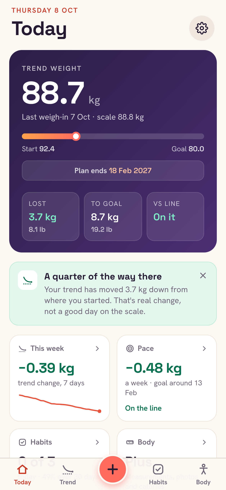
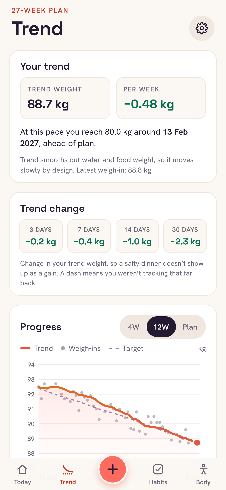
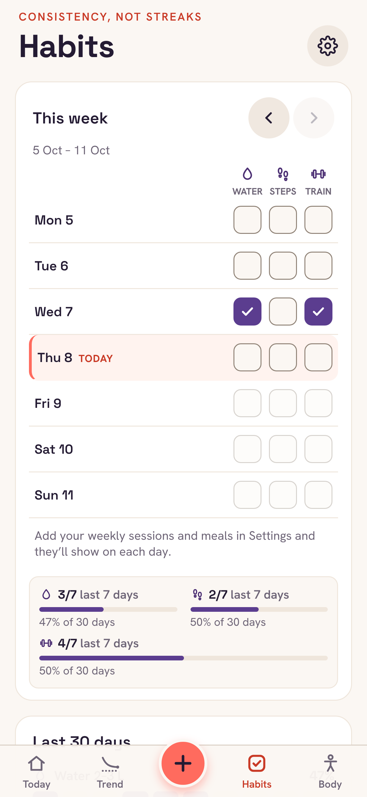

How it works
Weigh in, then let the numbers settle.

Today, at a glance
Your trend weight, how far you’ve come and this week’s pace. Logging opens on your last weight, so it’s a tap or two.

The trend, against your plan
See the line you’re on and the one you planned. When a weigh-in jumps, it tells you why that’s normal.

Habits, without streaks
Tick off the few things that help, like water or a walk. Thirty-day grids show consistency, and a missed day doesn’t reset anything.
Free and Plus
Free does the job. Plus adds the extras.
Tidemark
Free
- Trend weight, weekly rate and your plan
- Chart, change table and full history
- Up to 3 daily habits
- Weigh-in reminders and Face ID lock
- Backups and CSV export
Tidemark Plus
£1.99 a month
or £11.99 a year, or £19.99 once. Monthly and yearly start with 7 days free.
- Medication log and dose reminders, for weekly GLP-1 injections or anything else you take
- Up to 6 habits
- Measurements and private progress photos
- Calories, and an estimate of what you really burn
- Password-protected backups
UK prices. Plus is bought through Apple, and the App Store shows the price in your own currency. Anything you enter in a Plus feature is kept if Plus ends, and comes back if you return.
Private by design
Your weight is nobody’s business but yours.
- No account
- There’s nothing to sign up for and no password to forget.
- No server
- Everything you enter is kept on your iPhone, encrypted by iOS while it’s locked.
- Nothing collected
- No analytics, no ads, no tracking. On the App Store, Tidemark’s privacy label is “Data Not Collected”.
Support
Questions people ask.
How do I move my data to a new iPhone?
If you restore your new iPhone from an iCloud or computer backup of the old one, Tidemark comes with it. Or, in Tidemark on the old phone, go to Settings → Export backup, save the file somewhere you can reach from the new phone, then use Settings → Restore from backup there.
What happens if I lose my phone?
Your data is only on your phone, so a backup is what gets it back. Tidemark reminds you to make one and shows when you last did. You can lock a backup with a password, so only you can open it.
Why does my weight jump around so much?
A day’s weight moves with water, salt, sleep and what you last ate, often by a kilo or more. That’s why Tidemark shows a trend: one high reading moves it a little, and only a real change moves it a lot.
How do I cancel Plus?
On your iPhone, open Settings, tap your name, then Subscriptions, then Tidemark. You can also get there from Tidemark’s Settings → Manage subscription. Cancel at least 24 hours before the renewal date to avoid the next charge.
Can I get a refund?
Apple handles all payments, so refunds go through Apple: visit reportaproblem.apple.com and sign in with your Apple ID. We can’t see or refund purchases ourselves.
I bought Plus but it isn’t showing.
Open Tidemark’s Settings → Restore purchases, signed in with the same Apple ID you bought it with. Plus works on any iPhone signed in to that Apple ID.
Does Tidemark give medical advice?
No. Its targets, trends and calorie estimates are general guidance from the numbers you enter, and the medication log only records what you take. Talk to your GP, pharmacist or prescriber about your treatment, especially if you’re pregnant or have a health condition.
Something isn’t working.
If Tidemark shows an error, tap “Email the error to support” on that screen: it fills in the error and the app version, and you see the email before it’s sent. Otherwise, email us and say what you were doing when it happened.
Still stuck?
Email yameen@ysbdesigns.uk. You’ll hear back from the person who builds Tidemark.
Privacy policy